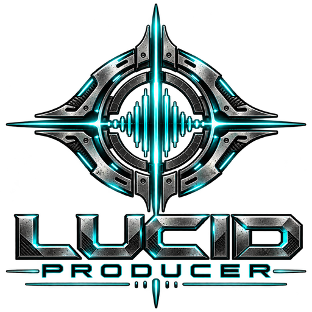
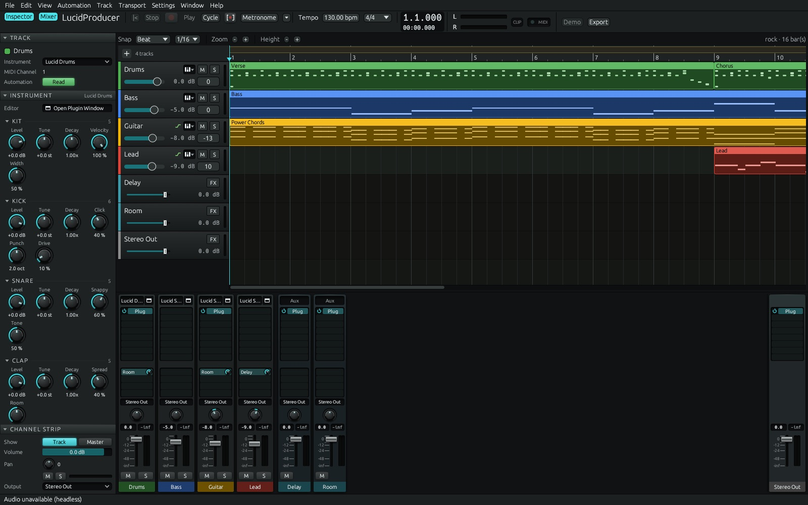
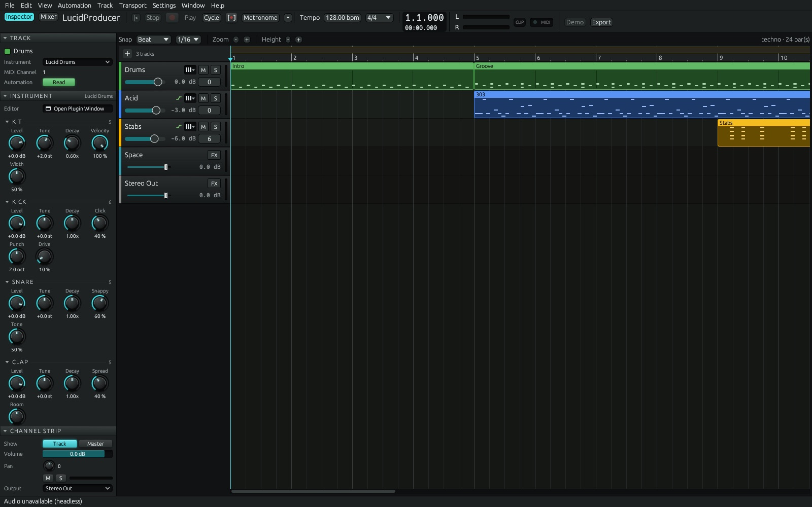
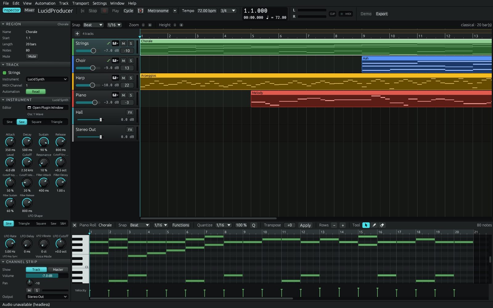
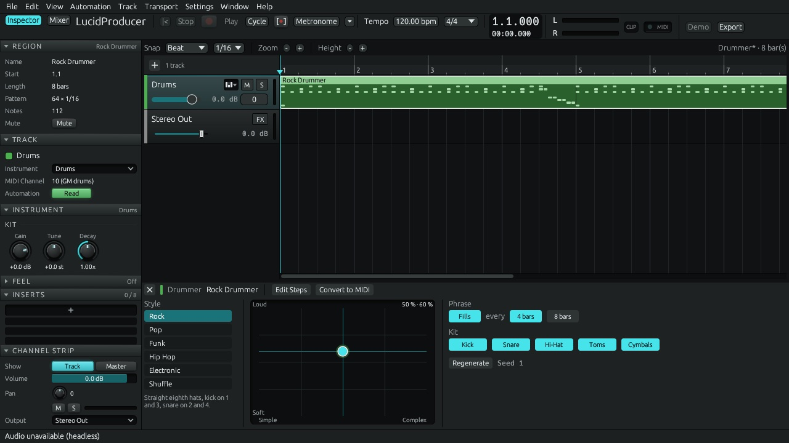
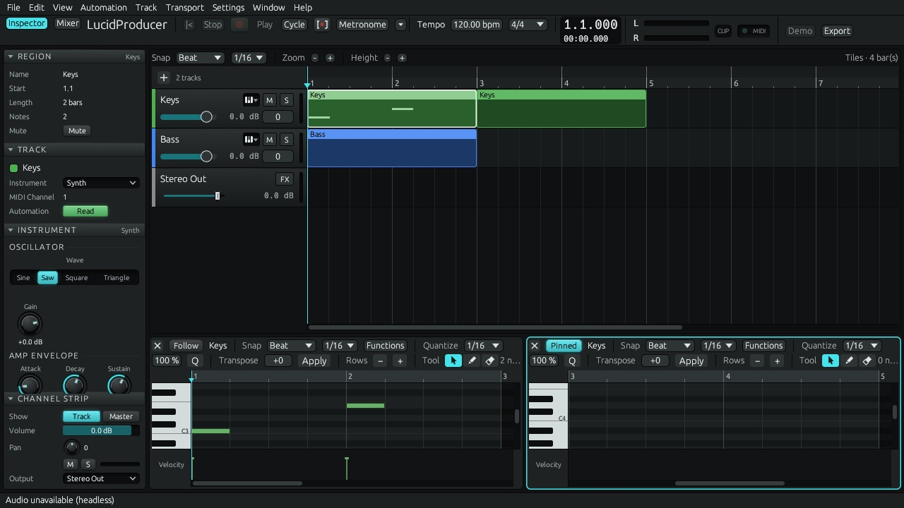
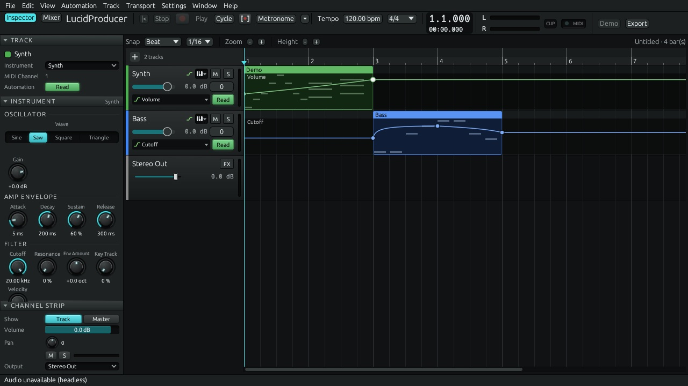
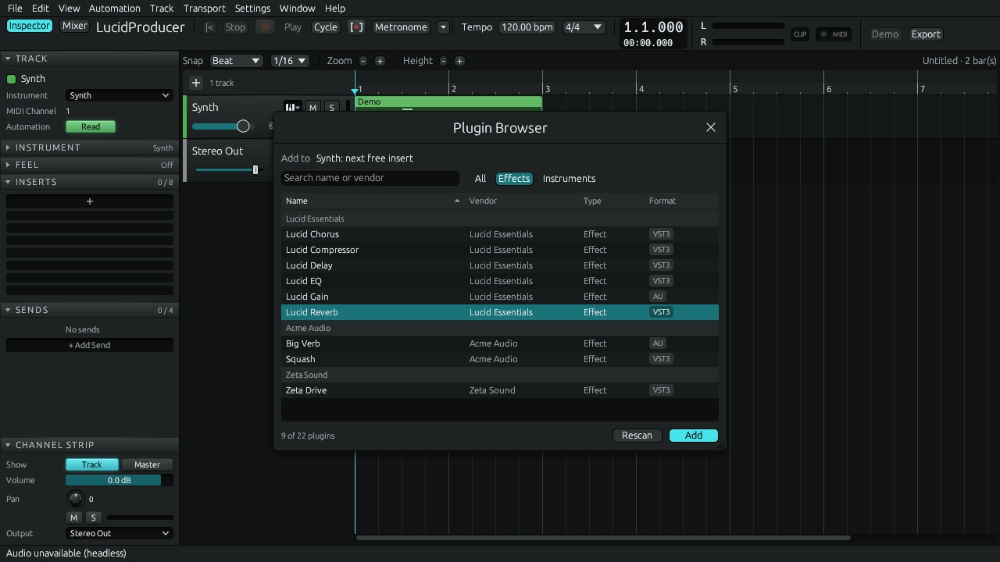

A digital audio workstation written from scratch in Rust, in the tradition of DAWs like Logic Pro, Ableton Live, Cubase, Reaper and Bitwig. People and AI agents drive it with the same tools.

An AI agent such as Claude can produce a track in LucidProducer as fully as a person at the keyboard can, and check its own work along the way.
# a project from the command line $ lucidproducer-cli new song.lucidproj --demo # apply edits as JSON commands $ echo '[{"op":"add_track","name":"Bass","instrument":"Lucid Synth"}]' \ | lucidproducer-cli apply song.lucidproj - # render offline and get a JSON report $ lucidproducer-cli render song.lucidproj -o song.wav # or hand the whole thing to Claude Code $ claude mcp add lucidproducer -- lucidproducer-mcp
A dark arrange window with tracks and regions, a piano roll that opens with a double-click, a channel strip per track and a control bar with transport, tempo, cycle and metronome. The audio engine is real-time safe and can also render a whole project offline.
Drag, move, resize and split regions with snapping, zoom and cycle. Aliases, track cloning, a tempo track and markers.
Quantize, chord recognition, Musical Typing, MIDI recording and file import/export, plus Feel, a per-track humanizer with presets.
Pattern regions with one row of steps per drum sound, and drummer regions whose groove is generated for you.
Audio tracks and recording, import of WAV, AIFF, FLAC, MP3, Ogg Vorbis and M4A, region gain and fades, Normalize, Reverse and Bake Effects into Audio.
Volume, pan, mute, solo and meters, buses and sends, and per-parameter automation with Read, Touch, Latch and Write modes.
Hosts Audio Units, VST3 and CLAP plugins on macOS, with editors in floating windows or as tiles.
Several piano rolls, step editors and plugin editors side by side, rearranged by mouse or keyboard and saved per project or as templates.
Background bounce to WAV or AIFF with loudness normalization, configurable key commands, autosave and crash recovery.
Pop, a classical nocturne in 3/4, rock with a Drummer groove, and techno with an acid line and a filter sweep, all from factory sounds.
From the demo songs and the app's own snapshot tests. Click an image to enlarge it.






LucidProducer's instruments and effects come from Lucid Essentials, a companion suite of 39 VST3 and Audio Unit plugins with the same look. They also run in any other DAW.
LucidProducer is in pre-release testing on macOS (Apple Silicon). Public builds will follow. It is a clean-room project and shares no code with any other DAW.